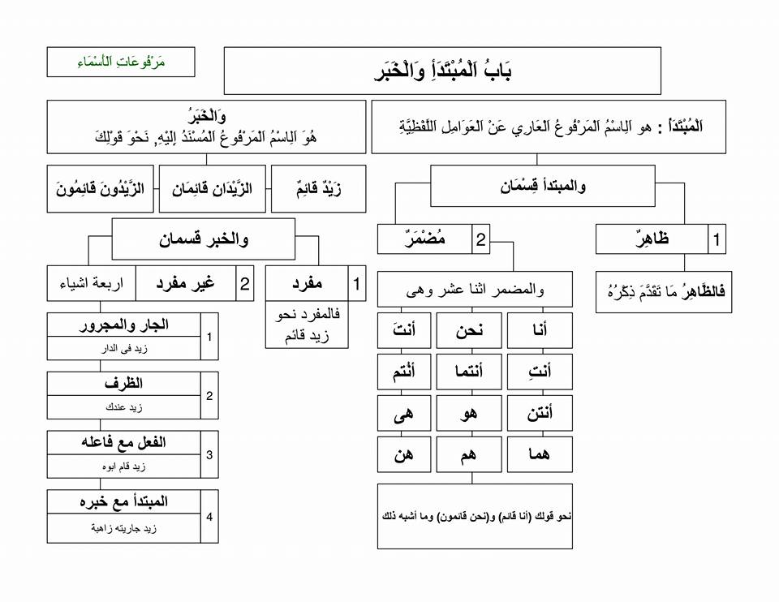

بَابُ اَلْمُبْتَدَأِ وَالْخَبَرِ
اَلْمُبْتَدَأُ : هو اَلِاسْمُ اَلْمَرْفُوعُ اَلْعَارِي عَنْ اَلْعَوَامِلِ اَللَّفْظِيَّةِ والمضمر اثنا عشر وهى وغير المفرد (اربعة اشياء )الجار والمجرور والظرف والفعل مع فاعله والمبتدأ مع خبره نحة قولك : (زيد فى الدار) وزيد عندك وزيد قام ابوه وزيد جاريته زاهبة)
Mubtada dan khabar Mubtada adalah isim yang dirafa’kan yang terbebas dari amil-amil lafadzh.Khabar adalah isim yang dirafa’akan yang disandarkan kepada mubtada’. Contohnya :
"زَيْدٌ قَائِمٌ" وَ"الزَّيْدَانِ قَائِمَانِ" وَ"الزَّيْدُونَ قَائِمُونَ "
Mubtada isim dzahir itu adalah sebagaimana yang telah dijelaskan sebelumnya (seperti contoh di atas) Mubtada isim dhamir itu ada dua belas :
أنا ونحن وأنتَ وأنتِ و وأنتما وأنُتم وأنتن وهو وهى وهما وهم وهن
(أنا قائم) و(نحن قائمون)
Khabar itu ada dua bagian , yaitu khabar mufrad dan khabar ghair (bukan) mufrad. Khabar mufrad contohnya زيد قائم Khabar ghair mufrad itu ada empat (زيد فى الدار وزيد عندك وزيد قام ابوه وزيد جاريته ذاهبة)
Amil-amil yang masuk kepada mubtada dan khabar kaana dan saudara-saudaranya mereka merafa’kan isim (mubtada) dan menashabkan khabar. kaana dan suadara-saudaranya itu adalah : كَانَ, وَأَمْسَى, وَأَصْبَحَ, وَأَضْحَى, وَظَلَّ, وَبَاتَ, وَصَارَ, وَلَيْسَ, وَمَا زَالَ, وَمَا اِنْفَكَّ, وَمَا فَتِئَ, وَمَا بَرِحَ, وَمَا دَامَ,
dan apa-apa yang bisa ditashrif dari semuanya, seperti : كَانَ, وَيَكُونُ, وَكُنْ, وَأَصْبَحَ وَيُصْبِحُ وَأَصْبِحْ,
"كَانَ زَيْدٌ قَائِمًا, وَلَيْسَ عَمْرٌو شَاخِصًا"
inna dan saudara-saudaranya mereka menashabkan mubtada dan merafa’kan khabar.
إِنَّ، وَأَنَّ، وَلَكِنَّ، وَكَأَنَّ، وَلَيْتَ، وَلَعَلَّ،
Contohnya :
إِنَّ زَيْدًا قَائِمٌ، وَلَيْتَ عَمْرًا شَاخِصٌ
dzhanantu (dzhanna) dan saudara-saudaranya mereka menashabkan mubtada dan khabar karena keduanya itu (mubtada dan khabar) adalah maf’ul bagi dzhanna dan saudara-saudaranya.
ظَنَنْتُ، وَحَسِبْتُ، وَخِلْتُ، وَزَعَمْتُ، وَرَأَيْتُ، وَعَلِمْتُ، وَوَجَدْتُ، وَاتَّخَذْتُ، وَجَعَلْتُ، وَسَمِعْتُ؛
contohnya :
ظَنَنْتُ زَيْدًا قَائِمًا، وَرَأَيْتُ عَمْرًا شاخصً
